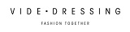
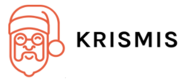

The Twisted Project Sponsorship Program
We want to continue to invest in and improve Twisted – for the benefit of our users, and the public at large. We can’t do this without the support of our sponsors and, as a project, we want to publicly acknowledge certain donations through our revamped Twisted Project Sponsorship Program.
For more information about becoming a Twisted Sponsor, see the Twisted Software Foundation.
Golden Tree Snake
Silver Sidewinder

Copperhead
Aluminum Adder


For information on Twisted’s founding sponsors, click here.